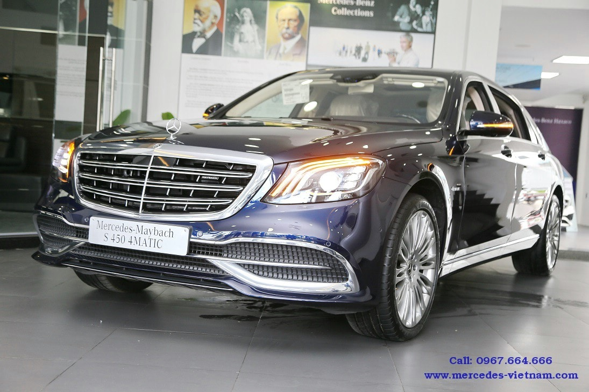
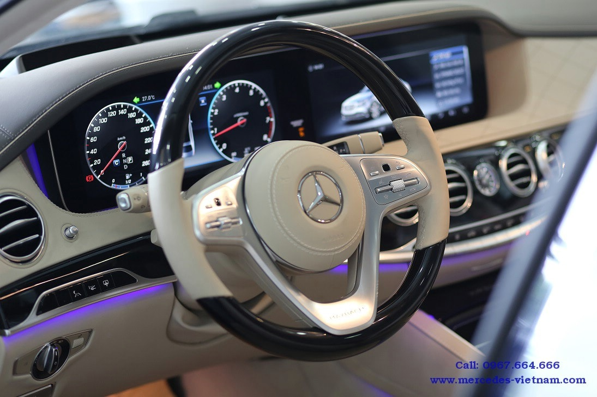
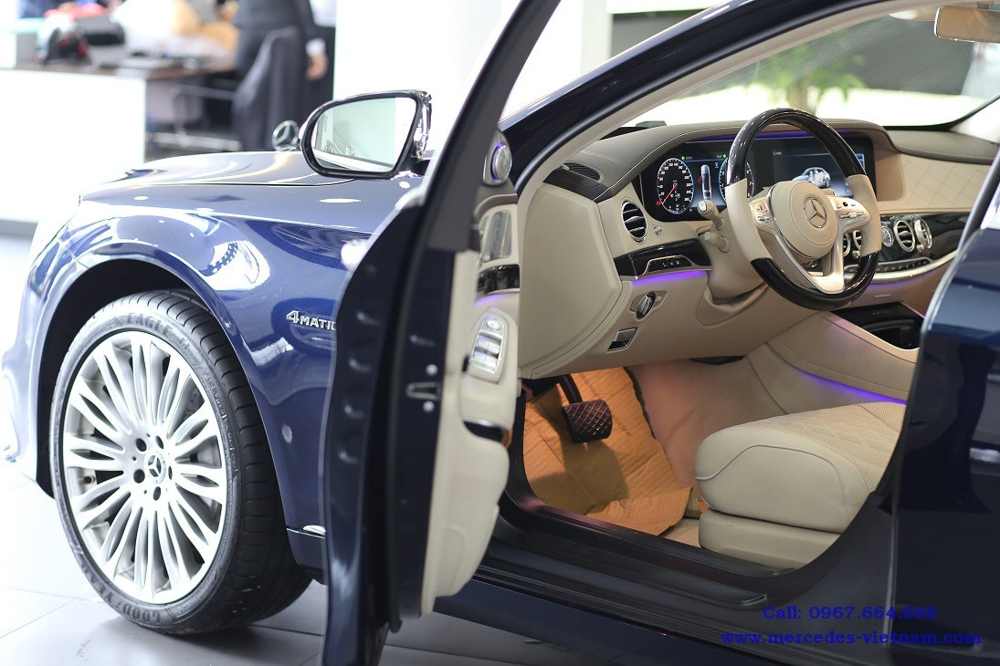
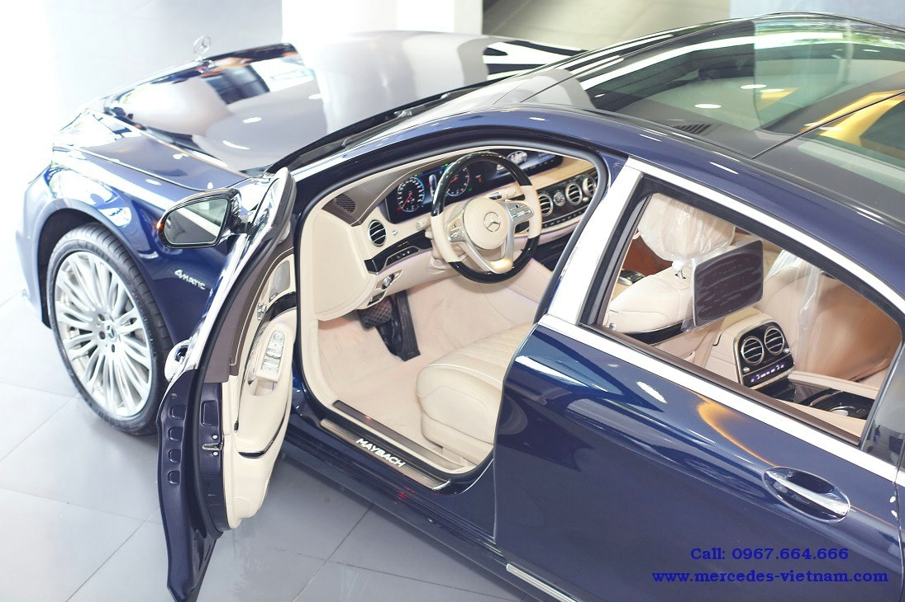
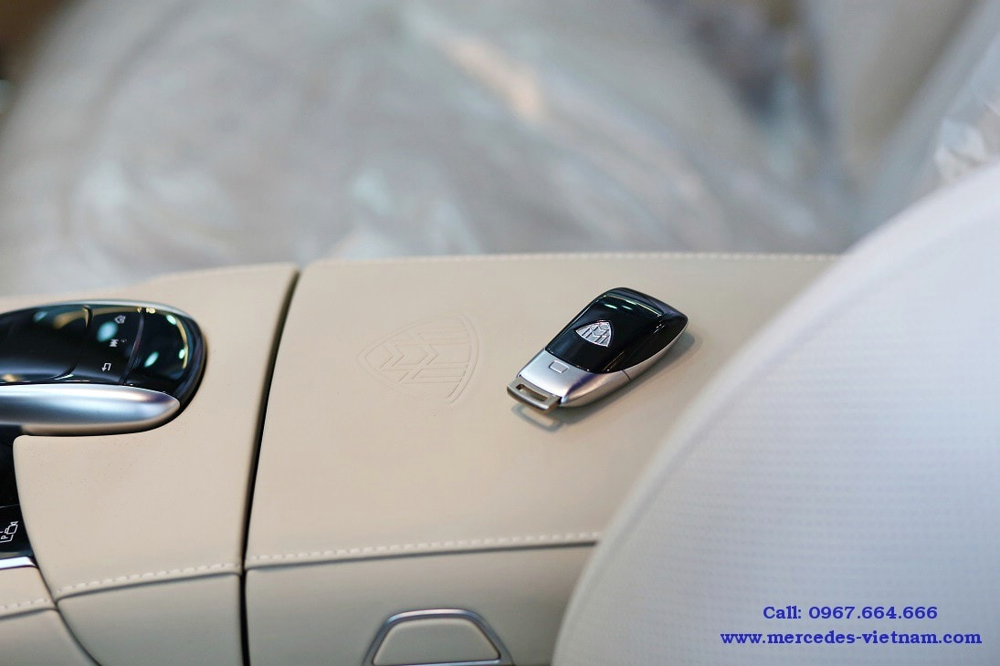

Mercedes Maybach S450 2018
MERCEDES-MAYBACH S450 2018 CÓ GIÁ LÀ 7.219.000.000 VNĐ
Nét đẹp mới mẻ của phiên bản Mercedes Maybach S450 2018
Ở phiên bản Mercedes Maybach S450 này được cho ra mắt sẽ thay thế hoàn toàn cho phiên bản Mercedes Maybach S400 này đó nhé , với việc hãng cho sử dụng 1 động cơ hoàn toàn mới và những công nghệ tiên tiến hiện đại nhất , tất cả những điểm trên đã gây được sự chú ý cho nhiều người hâm mộ hiện nay , dòng xe sedan hạng sang cao cấp này sẽ được hãng cho tung bán ra vào cuối năm nay . Khi hãng quyết định sẽ thay thế phiên bản Mercedes Maybach S450 sẽ có 1 số thay đổi nhỏ ở phần ngoại thất chiếc xe này , bên cạnh đó thì hãng cũng quyết định nâng cấp công nghệ và động cơ hơn , để khác biệt hoàn toàn không giống với người tiền nhiệm của nó. Theo dự đoán, thì phiên bản mới nhất Mercedes-Maybach S450 4Matic 2018 sẽ có giá dự kiến hấp dẫn.
Nét mới mẻ ở bề ngoài chiếc xe Mercedes Maybach S450 2018
Phần ngoại thất của chiếc xe Mercedes Maybach S450 2018 này cũng được hãng cho thiết kế có phần tương tự như nhiều mẫu xe khác trong dòng Maybach hiện nay , với phần đâu chiếc xe có thêm sự xuất hiện của mặt lưới tản nhiệt kiểu dáng 3 thanh nan kép được đặt nằm ngang , còn có thêm 1 thanh dọc được đặt ở vị trí chính giữa , ẩn đằng sau các thanh ngang này chính là những thanh dọc mạ chrome bổ sung, khác với phiên bản thường. Trên bề mặt lưới tản nhiệt của chiếc xe này còn có thêm logo Maybach để cho mọi người có thể dễ dàng nhận biết ra dòng xe này , ở phần cản trước và cản sau của chiếc xe Mercedes Maybach S450 2018 có thêm nẹp chỉ mạ chrome trên cản trước, cản sau và thân xe thêm phần bắt mắt hơn ,thiết kế hoàn toàn khác biệt so với dòng xe S-Class tiêu chuẩn.
Sự xuất hiện của cụm đèn pha ở 2 bên đầu xe Mercedes Maybach S450 2018 này có thêm 3 thanh đèn led được nằm sát với nhau , bên cạnh đó hãng cũng cho biết sẽ sử dụng cụm đèn pha công nghệ Multibeam Led mới nhất hiện nay . Ở phần sườn xe được hãng cho sử dụng bộ mâm bánh xe la zăng có thiết kế hoàn toàn khác biệt , 19-inch đa chấu mới nhất , các cột mạ crome thay vì được hãng cho sơn đen như ở phiên bản thường và logo chữ M được lồng vào với nhau . Ở phía cuối đuôi xe có thêm dòng chữ Maybach được xuất hiện trên nắp cốp và sự xuất hiện của 2 chụp ống xả kép mạ chrome tích hợp với cản sau được hãng cho kéo dài theo chiều rộng của đuôi xe càng tăng thêm sự bề thế cho kiểu dáng bên ngoài của nó .
Khoang nội thất tiện ích bên trong của Mercedes Maybach S450 2018.
Phiên bản Mercedes Maybach S450 2018 này được hãng cho trang bị khoang nội thất được bao bọc bằng da toàn bộ rất êm ái và được khâu thành hình quả trám tạo ra sự sang trọng cho chiếc xe này , trên vô lăng của chiếc xe này cũng được xuất hiện thêm dòng chữ Maybach tạo ra nét riêng biệt , kiểu dáng 2 chấu được ốp bằng gỗ cùng với da cao cấp , bên cạnh đó thì vô lăng xe tích hợp các nút bấm chức năng dạng cảm ứng, tương tự cách hoạt động trên một chiếc smartphone. Cùng với đó sự tiện ích bên trong Mercedes Maybach S450 2018 còn được thể hiện qua 2 màn hình màu TFT có kích thước 12,3-inch trên bảng điều khiển hiển thị bảng đồng hồ và màn hình truyền thông đa phương tiện, được hãng cho phủ chung một mặt kính tạo cảm giác như một màn hình kích thước lớn.
  Hãng cũng cho trang bị thêm Mercedes Maybach S450 2018 rất nhiều những chức năng của hệ thống đa phương tiện có thể điều chỉnh bằng cách vuốt trên bề mặt vô lăng rất tiện ích , khiến người lái tập trung vào lái xe hơn không gây xao nhãng . Bên cạnh đó cũng cần phải kể tới mặt táp-lô và thành cửa bọc da với đường viền chỉ trang trí rất bắt mắt , tăng thêm tính tinh tế cho mẫu xe này hơn , cụm đồng hồ thời gian IWC ở ngay chính giữa bảng điều khiển chiếc xe này cũng khá tiện ích , ốp bệ cửa có thêm sự xuất hiện của logo ‘Mercedes-Benz’ phát sáng càng làm cho chiếc xe này trở nên sang trọng , đẳng cấp hơn . Ngoài ra thì khoang nội thất của Mercedes Maybach S450 2018 cũng được cho ốp gỗ designo sunburst myrtle màu nâu bóng tăng thêm nét thẩm mỹ hơn rất nhiều. Ở gần tựa tay giữa vẫn là touchpad điều khiển cảm ứng.
Không dừng tại đó, ở phiên bản Mercedes Maybach S450 2018 này cũng được hãng cho trang bị thêm dàn âm thanh mang thương hiệu Burmester® high-end 3D với dàn loa lên tới 24 loa, công suất 1540W , nó có thêm các chức năng kết nối thêm bluetooth , tính năng sạc điện thoại không dây .Điều đặc biệt hơn nữa hãng Mercedes này đã giới thiệu với khách hàng thêm ly Champagne bằng bạc và ngăn để ly hơn , còn ở khoang sau được thiết kế với 2 chiếc ghế độc lập có thêm bàn gấp để làm việc , tất cả đều đảm bảo được sự tiện ích cho người ngồi bên trong chiếc xe
Khả năng vận hành Mercedes Maybach S450 2018 tuyệt đỉnh
Phiên bản cao cấp Mercedes Maybach S450 2018 này cũng được hãng cho trang bị động cơ V6 mạnh mẽ có dung tích trong khoảng tầm 2996 (cc) ,tăng áp kép , từ đó sẽ giúp cho chiếc xe tăng hiệu suất hoạt động 1 cách hiệu quả hơn khi sản sinh ra được công suất cực đại 245 kW [333 hp] tại 5250 – 6000 vòng/phút cùng với đó là mô-men xoắn cực đại cũng đạt mức 480 Nm tại 1600 – 4000 vòng/phút . Đây được coi là 1 trong những cỗ máy V6 này có mức kinh tế tốt nhất này , khi sử dụng hệ thống Camtronic này có thể tự động chuyển động cơ này sang chế độ 4 xy lanh ở 1 số đoạn đường đi nhất định . Sự kết hợp của khối động cơ trên cùng với hộp số tự động 7 cấp này và hệ dẫn động 2 cầu , từ đó đã giúp cho Mercedes Maybach S450 2018 tăng tốc 1 cách nhanh hơn , chỉ mất khoảng thời gian 6.1 giây để đi từ 0-100km này trước khi đạt tới tốc độ cực đại 250km/h, cùng với mức tiêu hao nhiên liệu của chiếc xe này trong tầm 8,4-8,9 (lít/100 km)
Công nghệ an toàn đỉnh cao nhất của Mercedes Maybach S450 2018
Ở phiên bản Mercedes Maybach S450 2018 này đã được hãng cho sử dụng thêm ứng dụng công nghệ lái thông minh, đây được coi là công nghệ mới nhất của Mercedes này , nó có chức năng lái bán tự động bao gồm việc tự động điều chỉnh thêm vận tốc của chiếc xe khi đi vào đoạn khúc cua hay những đoạn đường giao nhau hơn , có cũng có thể cải thiện thêm hệ thống hỗ trợ chuyển làn đường 1 cách chủ động hay có thêm sự hỗ trợ dừng xe khẩn cấp lại khi phát hiện người lái xe đang mất tập trung khi đi trên đường đó nhé. Một số cải tiến khác trên xe như hệ thống kiểm soát thân xe chủ động, cùng với đó là hệ thống ESP® Curve Dynamic Assist giúp tránh hiện tượng thiếu lái khi vào cua ở tốc độ cao, hỗ trợ ôm cua chính xác và an toàn hơn , không chỉ vào cua tốt hơn mà còn giúp chiếc xe này có thể nghiêng tới 2,65 độ đó nhé. Vẫn chưa hết khi hãng cũng bổ sung 1 số những hệ thống phanh khác chẳng hạn như hệ thống phanh Adaptive này với chức năng hỗ trợ dừng xe (HOLD) và hỗ trợ khởi hành ngang dốc (Hill-Start Assist) kết hợp cùng với phanh tay điều khiển điện với chức năng nhả phanh thông minh , sẽ giúp người lái phản ứng 1 cách kịp thời khi đi trên đường hay xảy ra sự cố đâu nhé.